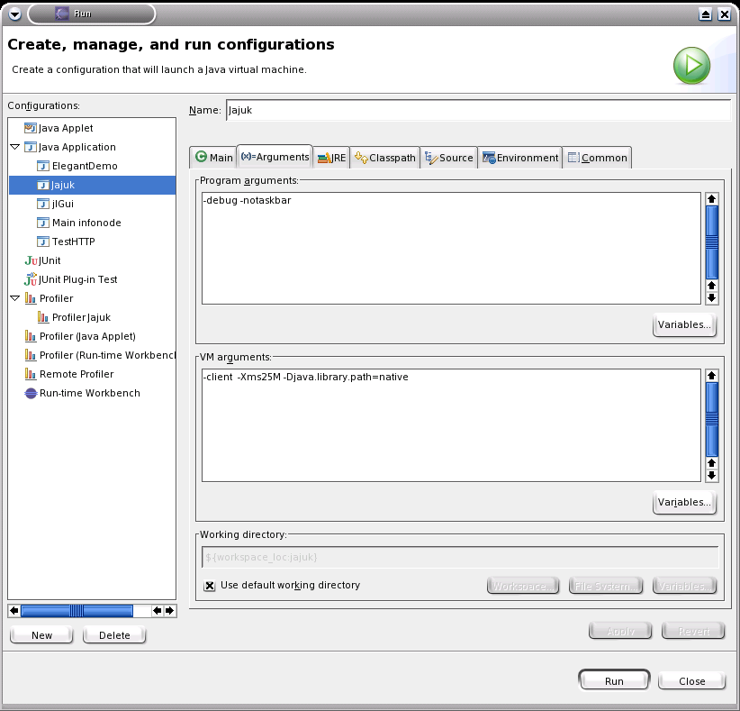

Under eclipse CVS repository location looks like :

Welcome to new Jajuk developers ! Have fun.
Jajuk code and comments must be only in English natural language.
It is mandatory to subscribe to Jajuk developer mailing list ( jajuk-developers@lists.sourceforge.net ) at http://lists.sourceforge.net/lists/listinfo/jajuk-developers. This list is used for almost any communication inside our group. You may also use and monitor the public Open Discussion forum (http://sourceforge.net/forum/forum.php?forum_id=315360)
Developers activity and list can be found at http://jajuk.sourceforge.net/developers.html
We stongly advice to use the Eclipse platform to develop. All following documentation (CVS...) deals with Eclipse only.
We assume you know CVS. If you are not so familiar with CVS, please read the CVS : http://www.cvshome.org/docs/manual/cvs-1.11.15/cvs.html.
The Connexion String is
:extssh:bflorat@cvs.sourceforge.net:/cvsroot/jajuk
Under
eclipse CVS repository location looks like :
Make sure the whole project yet compiles and is in an acceptable stability state before committing something. if you feel your work not stable enough, keep it on your local workspace for the moment.
During a release process, please follow freezes (see release process part).
You should work most of the time in the head branch for minor changes.
If you start to code a big feature (like P2P) with a lot of impacts on the project and potentially dangerous for current release, create your own branch for this feature and merge your work into the head when you feel ready and when no release is planned for some weeks.
Before starting a new major release (0.2 for example is a major release), we create a maintenance branch for previous release (0.1) only used for critical bugs fixes. You should continue to work in the Head branch. All new features, fixes, translations... are only done on the head branch.
In preferences / "Java/Code generation/Code and comments" or "Java/Code Style/Code templates", please import scripts/code_generation.xml file. This is a template for new java sources.
When you launch Jajuk from eclipse, you have to specify '-debug' as program argument so classes in directories takes images from local jajuk.jar file and doesn't look for images with an url from inside the jar.
You can also use the '-notaskbar' as program argument to hide program in taskbar and keep only tray.
See default configuration:


Only use UTF-8 for your source. Use preference screen to set it:

Check your .properties file uses correct encoding (especialy under Eclipse 3.0 final) by selecting file/properties/info. If the file is in ISO8859-1, set UTF-8 instead.
Read this if you are a developper planning to make also some translation ! You shouldn't have to use any provided ant script when under Eclipse environment. Two ant scripts are found in the tree:
scripts/build.xml : this is the stored build file packaged with the distribution and used in command line to recompile Jajuk using a standard installation. Do not use it under Eclise.
scripts/build-dist.xml : this is the ant script used by the packager to generate Jajuk distribution. You shouldn't have to use it.
The Jajuk release process usually takes from 2 to 4 weeks.
The release process is announced with a message in the developer mailing list (make sure you subscribed to this list). Obviously, all developments are frozen in the repository. English labels are frozen to allow translators to begin there work.
Translators can complete there translations during the entire process but the soonest would be the best to allow testers to use up-to-date translated releases. Note that translators can translate current releases even outside release process periods. Translator guide is available here.
Testers qualify and developers fixes bugs discovered during this period. We try to release a release candidate (rc) every 2 or 3 days during this period. Note these bugs and release are internal only and you should use to public bug tracker to report them but use developer list instead. All these rc are internal only and should not be distributed to public. Testers can base their works on this qualification form. A mail is send on developer list at each rc publication.
When we estimate that the last rc is stable enough, packager releases it on SourceForge as stable release. The communication delegate issues the new in Freshmeat and other web sites.
We mainly follow Sun Java conventions with special code standards :
Please import the scripts/fomatter.xml description file in Window->Preferences. Then use Right click->Source->Fomat to format your code according to Jajuk standards.
public void myMethod(){
if
(size == 0) {
try {
size
= (long) inStream.available();
} catch
(IOException e) {
e.printStackTrace();
}
}
else if (size == currentSize) {
++size;
}
else {
--size;
}
}
Begin variable name by the first letters of the type
so the variable is auto-described:
String
sFoo StringBuffer sbFoo Track track;
Begin interfaces with a upper 'I'. The 'i' is not
taken into account for variables names:
IPerspectiveManager
pm;
Avoid to use PCDATA values, use attributes instead : it's faster to parse and much easier to code.
Use single quotes, not double quotes.
Please correctly comment all attributes and methods with javadoc norms ( /** comments */ ).
Please remove commented dead code and move it to some personal junk classes if you want to keep it.
We ask members have to follow these rules.
Members have to be SourceForge member.
Members have to communicate in English.
Members have to subscribe on developer mailing list. This is the main communication stream so people don't receiving messages can't be considerate as project members.
Members should give minimum planning and actions on the project so we can plan releases.
Members have to follow CVS rules.
Members may be removed from the project if we don't heard about them at least 6 mouths.